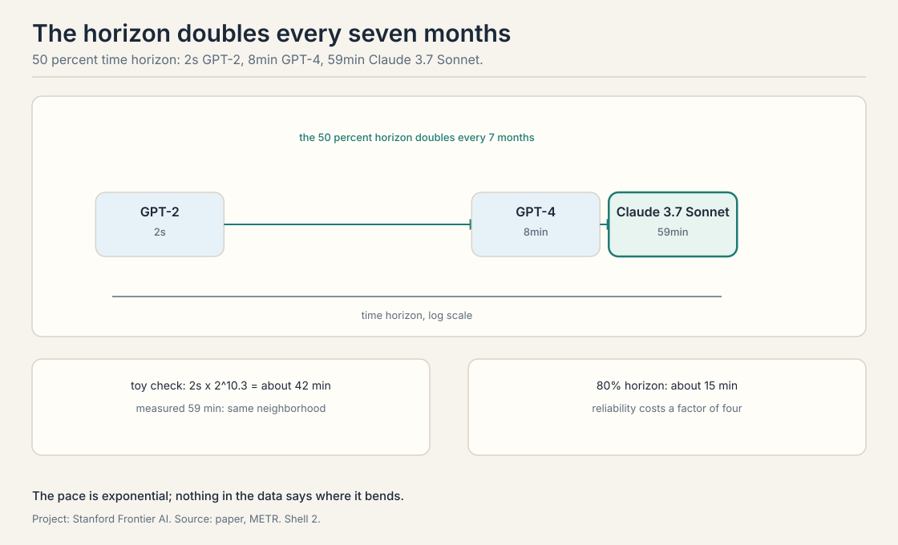
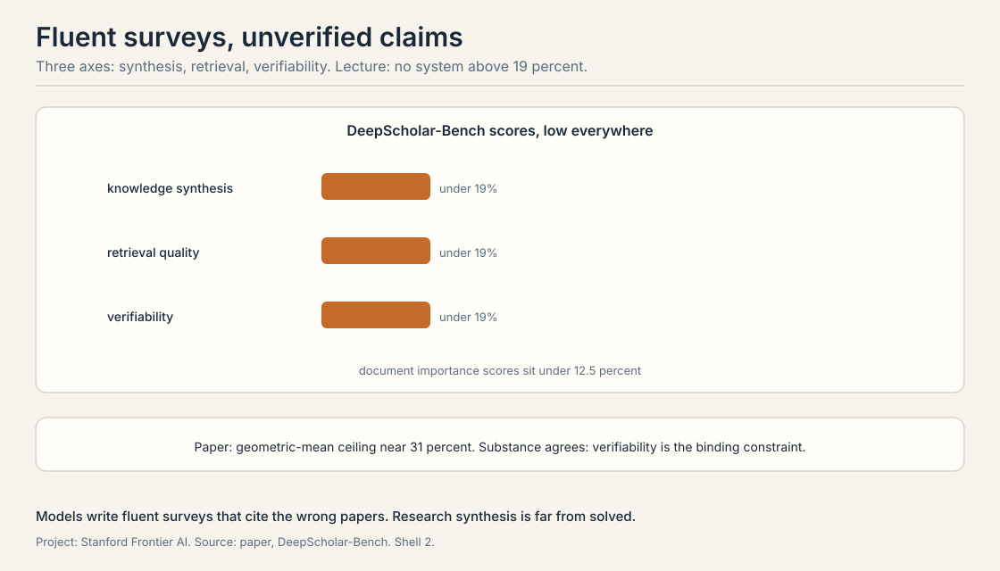

Lecture 7: Measuring Agents on Long-Horizon Tasks
Video blocked (ad-blocker or local file mode).
Watch on YouTubeVideo not loading? Watch on YouTube
METR time horizons, GDPval's professional comparisons, and DeepScholar-Bench on research synthesis: how the field measures long-horizon agency.
Benchmarks saturate. Tasks do not.
Builds on: The full self-improvement loop, which needs measurement of agency rather than answers.
Answer benchmarks saturate: models hit the ceiling and the test stops discriminating. Agent benchmarks measure something else: whether the model can carry a task over hours, use tools, recover from errors, and finish. This lecture covers three evaluations that try to measure agency itself.
METR: the time horizon
Builds on: The agency measurement problem, with the time-horizon method.
METR, Model Evaluation and Threat Research, asks a single question: how long a task can an AI complete. The method: assemble a suite of real tasks, measure how long each takes a skilled human, and find the task length at which the model succeeds half the time. That length is the time horizon at 50 percent. Reliability is measured the same way at 80 percent: the task length the model completes 8 times out of 10.
The suite in the lecture: 170 tasks across three families. SWAA, 66 small software tasks. Edgecast, 97 tasks from a real company. RE-Bench, 7 hard research-engineering tasks. Human times are geometric means across contractors: the geometric mean damps outliers, so one very slow contractor does not dominate. A detail the lecture stresses: contractors take 5 to 18 times longer than the original maintainers, because the maintainers know the codebase. The human baseline is already a choice, and the choice matters.
The headline: the 50 percent time horizon doubles every 7 months. GPT-2 managed 2 seconds. GPT-4 managed 8 minutes. Claude 3.7 Sonnet, in 2025, managed 59 minutes. The toy that checks the pace: start at 2 seconds, double every 7 months, run 6 years. That is 72 months, about 10.3 doublings, a factor of roughly 1,250, landing at about 42 minutes. The measured 59 minutes is in the same neighborhood. The 80 percent horizon lags: about 15 minutes when the 50 percent horizon was 59. Reliability costs a factor of four.

The failure modes, from the lecture: poor planning, poor tool choice, reasoning errors, premature abandonment, the agent gives up while the task is still solvable, and repetitive loops, the agent retries the same failing action. The lecture’s warning about the trend: the doubling pace cannot continue forever, but nothing in the data says where it bends.
As of October 2026 the benchmark has moved. METR’s Time Horizon 1.1, January 2026, expanded to 228 tasks with a doubling time of about 88.6 days for models since 2024. A late 2025 frontier model reached a 50 percent horizon near 4 hours 49 minutes, with the 80 percent horizon near 27 minutes. Claude Mythos Preview, April 2026, pushed the 50 percent horizon past 16 hours, though METR notes measurements above 16 hours are unreliable. The lecture’s 7-month pace was already conservative.
GDPval: against the professionals
Builds on: METR’s capability measurement, measuring economic value against professionals instead.
GDPval, from OpenAI, measures economic value directly. The method: 44 occupations, 322 tasks drawn from real professional work, 220 of them gold-standard and public on HuggingFace, spanning 9 GDP sectors. Each task is done by a professional with 10 or more years of experience, the expert baseline, and by the model. Evaluators compare blind. The win rate is the fraction of tasks where the model ties or beats the professional.
The trend the lecture shows is linear and steep. GPT-4o: 12.4 percent. Claude Opus 4.1: 47.6 percent. The line points at parity. The failure mode the lecture names is instruction-following: the model promises to check the reference data and does not, or skips steps the professional would never skip. Not reasoning. Diligence.
The economics: GPT-5 costs about 1.6 times more per task than the model it replaced but finishes 1.4 times faster with multiple trials, and the lecture reports model cost under 10 percent of the expert’s salary on these tasks. As of October 2026 the line kept climbing: GPT-5.2 Thinking hit a 70.9 percent win-or-tie rate against industry professionals in December 2025, up from GPT-5’s 38.8. The lecture’s linear trend did not bend.
DeepScholar-Bench: grading research synthesis
Builds on: GDPval’s professional comparison, grading the deep research agents of Lecture 5.
DeepScholar-Bench, from Stanford, evaluates the deep research agents of Lecture 5. The task: given a research question, produce a related-work section. The benchmark is live, a live benchmark: it reruns monthly on recent post-training papers, so models cannot have memorized the answers. Three axes: knowledge synthesis: does the report say the right things. retrieval quality: did it find the right papers. verifiability: is every claim backed by a citation that says what the report claims it says.
The lecture’s headline is blunt: no system exceeds 19 percent overall, and document importance scores sit under 12.5 percent. The models write fluent surveys that cite the wrong papers or misstate what the papers say. The paper’s own numbers are less bleak: a geometric-mean ceiling near 31 percent across systems. The gap between the lecture’s telling and the paper’s is a measurement choice: which aggregation, which snapshot. The substance agrees: research synthesis is far from solved, and verifiability is the binding constraint.

Start at 2 seconds for GPT-2. Double every 7 months. Six years is 72 months, about 10.3 doublings. Two to the 10.3 is about 1,250. Two seconds times 1,250 is 2,500 seconds, about 42 minutes. The measured 50 percent horizon for Claude 3.7 Sonnet was 59 minutes. The toy lands in the same neighborhood, which is the point: the pace is exponential and the arithmetic checks. Reliability is a stricter test. The 50 percent horizon asks for one success in two tries. The 80 percent horizon asks for four in five. Long tasks multiply the chances to fail: one bad tool choice or one abandoned subtask sinks the run. The lecture’s ratio, 59 minutes at 50 percent versus 15 at 80, says most of the horizon is luck the model cannot yet convert into reliability.
Contractors took 5 to 18 times longer than the maintainers who wrote the code. METR’s human baseline uses contractors, so the “human time” for a task is already inflated. A model that matches the contractor has not matched the expert who knows the codebase. The baseline is a choice, and it flatters the model by a factor the lecture puts between 5 and 18. It depends on the claim. Against contractors, the claim is “the model does outsourced work at outsourced speed”. Against maintainers, the claim is “the model does expert work at expert speed”. The lecture reports the contractor numbers and flags the gap so the audience discounts accordingly.
That knowing when to stop is unsolved. The agent gives up on solvable tasks: it misjudges the difficulty, or one failure convinces it the task is impossible. Humans do this too, but humans can be told “keep going”. The agent’s stop condition is internal. The lecture lists it alongside poor planning and tool choice as a top failure mode, which means persistence is a capability, not a attitude. Separate the stop decision from the work: a critic that reviews “should I quit” against the evidence, or a budget that forces N more attempts after the first quit signal. Both are verifiers over the agent’s own judgment, the course’s recurring answer.
Because it reframes the gap. The models can do the analysis. They skip the diligence: not checking the reference data, not following the steps. Professionals win on thoroughness, not brilliance. The lecture’s implication: the next points of win rate come from obedience and verification habits, the unglamorous half of agency. Easier to specify, harder to guarantee. A checklist can demand diligence. But the model must notice each step matters and actually execute it. The 12.4 to 47.6 to 70.9 climb suggests it is learnable. The remaining gap suggests it is not yet learned.
Static benchmarks leak into training data. A benchmark of research synthesis built on 2024 papers would be memorized by 2026 models, and the scores would measure recall, not research. Monthly reruns on recent post-training papers keep the questions fresh. The cost is comparability: the test changes, so scores across months are not strictly comparable. Different aggregations of the same weakness. The lecture’s 19 percent is the headline from its snapshot. The paper’s 31 percent geometric-mean ceiling is the kinder aggregation. Both say the same thing: verifiability is the binding constraint, and fluent unverified surveys are what current systems produce.
Partially. METR measures how long a task the model can complete, which is the course’s outer metric. GDPval measures economic value against professionals, which is the market’s metric. DeepScholar-Bench measures verifiability, which is the loop’s metric: unverified synthesis cannot train the next model. None measures self-improvement directly. The course’s loop, generate, verify, train, repeat, has no benchmark that runs the full turn. A task suite where the model trains on its own verified outputs between rounds, and the score is the delta across rounds. The verifier would need to be airtight, or the benchmark would measure reward hacking. Nobody has built it. That absence is the field’s open measurement problem.
The honest answer is that the lecture does not say. The candidates: task length hits the context window, the failure modes compound faster than capability grows, or the remaining tasks need judgment that does not scale with time. The October 2026 data shows the pace accelerating, 88.6 day doubling, not bending. The warning is prudence, not a prediction. The 50 percent horizon stalling while the 80 percent horizon catches up: capability stops extending reach and starts converting reach into reliability. Or the failure modes shifting from planning and tool choice to judgment and values, which do not yield to more time.
Recap: the whole lesson on one screen
- The horizon doubles. 2 seconds, 8 minutes, 59 minutes at 50 percent. Doubling every 7 months. Toy predicts 42 minutes over 6 years.
- Reliability lags. 80 percent horizon was 15 minutes when 50 percent was 59. Long tasks multiply failure chances.
- Baselines are choices. Contractors take 5 to 18 times longer than maintainers. The human time flatters the model.
- Professionals lose on diligence. GDPval: 12.4 to 47.6 percent, linear. The failure mode is instruction-following. By late 2025, 70.9 percent.
- Synthesis is unverified. DeepScholar-Bench: no system above 19 percent in the lecture’s telling, 31 percent ceiling in the paper’s. Verifiability binds.
- No loop benchmark. Nobody measures a full generate-verify-train turn. The field’s open measurement problem.
Used where, as of October 2026
- METR Time Horizon 1.1 (January 2026): 228 tasks, 88.6-day doubling since 2024. The live continuation of the lecture’s trend, now past 16 hours at 50 percent for the frontier.
- GDPval (OpenAI, 2025): the professional-comparison paradigm, with GPT-5.2 Thinking at 70.9 percent win-or-tie in December 2025.
- DeepScholar-Bench: Patel et al. plan new research queries every month, the template for leak-proof agent evaluation (arXiv, August 2025).
- Frontier lab evals: Terminal-Bench 2.0 (89 hard terminal tasks, ICLR 2026) and METR RE-Bench (seven research-engineering environments, November 2024) measure long-horizon work next to answer benchmarks (openreview, 2026, METR, 2024).
Official sources and further reading
Official: - CS329A Part 8: Agentic Evaluations and Long-Horizon Tasks (Autumn 2025). https://www.youtube.com/watch?v=8JAqLnTaZu4
Further reading: - Kwa et al., “Measuring AI Ability to Complete Long Tasks” (METR, 2025). https://arxiv.org/abs/2503.14499 - Patwardhan et al., “GDPval” (2025). https://arxiv.org/abs/2510.04374 - Patel et al., “DeepScholar-Bench” (2025). https://arxiv.org/abs/2508.20033
Caveats from these sources. The 19 percent DeepScholar figure is the lecture’s telling. The paper reports a geometric-mean ceiling near 31 percent. The October 2026 METR figures are from Time Horizon 1.1, a larger suite than the lecture’s 170 tasks. The Claude Mythos Preview 16-hour figure is from METR’s May 8, 2026 time-horizon update. Above-16-hour measurements are flagged unreliable by METR itself.
Connections to the other courses
- CS329Z: evaluation of agents from the builder side: how to test tool use, RAG, and long-horizon behavior in practice.
- CS329H: human evaluation, Elo, and preference measurement: the machinery behind GDPval’s blind comparisons.
- CS229S: what long-horizon tasks cost to run: the systems side of 16-hour agent evaluations.
Sources
- LECTURECS329A Part 8: Agentic Evaluations and Long-Horizon Tasks (Autumn 2025, published 2026-08)
- PAPERKwa et al., Measuring AI Ability to Complete Long Tasks (METR, 2025)
- PAPERPatwardhan et al., GDPval: Evaluating AI Model Performance on Real-World Economically Valuable Tasks (2025)
- PAPERPatel et al., DeepScholar-Bench: A Live Benchmark and Automated Evaluation for Generative Research Synthesis (2025)